01
Главная · Аниме
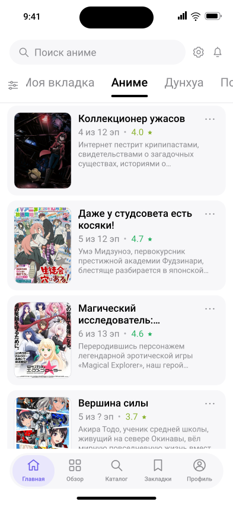
Начальная вкладка Аниме; публичная выдача API.
Anixart/Features/Home/HomeView.swift24 экранов в двух темах. Это макет по SwiftUI-коду, не скриншоты. Нажмите на экран, чтобы открыть его SVG.

Начальная вкладка Аниме; публичная выдача API.
Anixart/Features/Home/HomeView.swift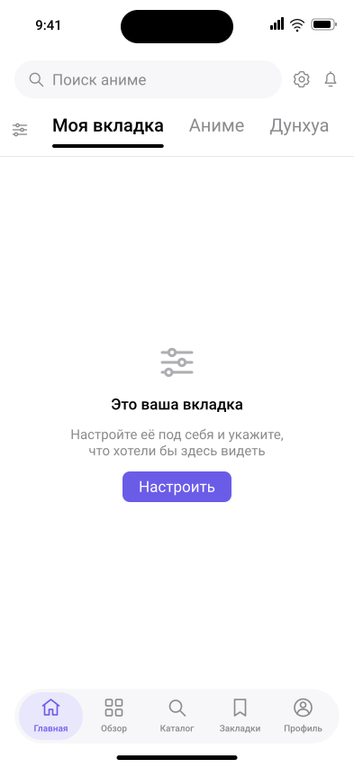
Моя вкладка ещё не настроена.
Anixart/Features/Home/CustomFilterTabView.swift
Без входа: баннеры, обсуждаемые релизы, комментарии недели. Тексты комментариев — примеры.
Anixart/Features/Discover/DiscoverView.swift
Сетка с постерами шириной 112 pt. Поиск виден, фильтр не применён.
Anixart/Features/Catalog/CatalogView.swift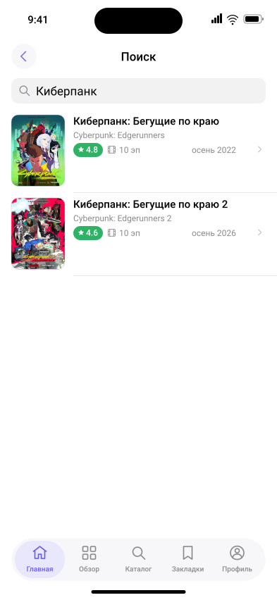
Поиск с главной, запрос «Киберпанк», результаты показаны без клавиатуры.
Anixart/Features/Home/HomeView.swift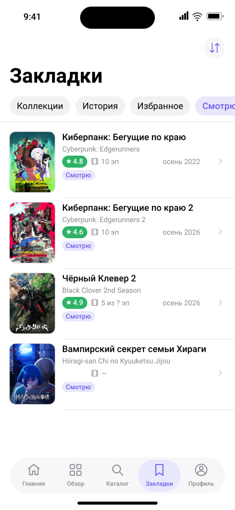
Вход выполнен; содержимое списка — демонстрационное. Полоса вкладок в начальном положении.
Anixart/Features/Bookmarks/BookmarksView.swift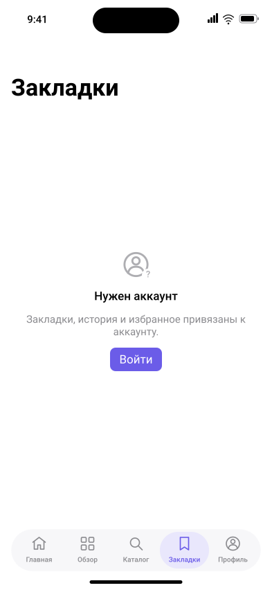
Точное сообщение SignInPromptView для закладок.
Anixart/Features/Bookmarks/BookmarksView.swift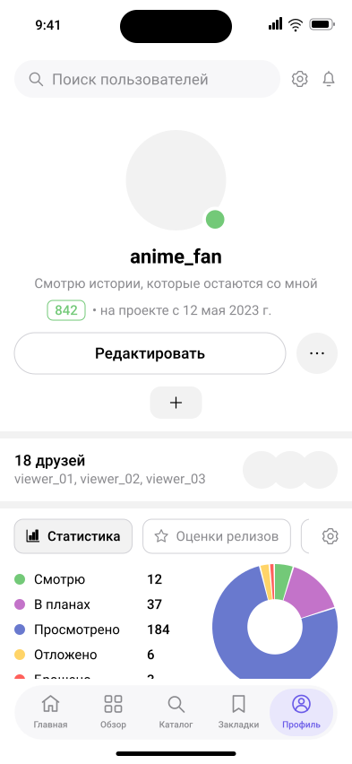
Демонстрационный профиль anime_fan: без обложки, социальных ссылок и витрины значков. Аватары не загружены.
Anixart/Features/Profile/ProfileViews.swift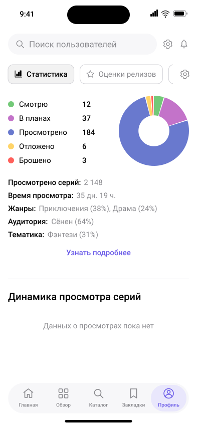
Тот же профиль после вертикальной прокрутки. Поисковая шапка остаётся сверху. Числа — примеры.
Anixart/Features/Profile/ProfileViews.swift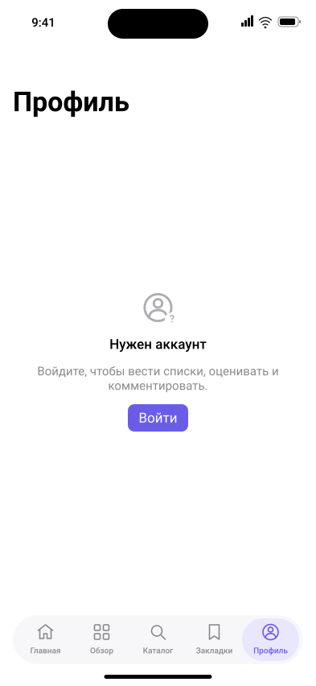
Состояние гостя после окончания загрузки сессии.
Anixart/Features/Profile/ProfileViews.swift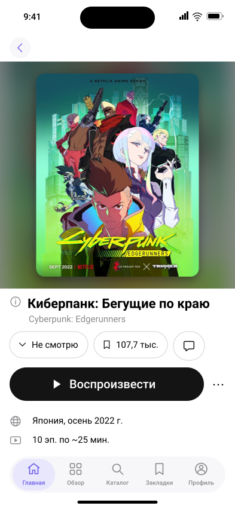
Киберпанк: Бегущие по краю. Постер и общие данные из API; релиз ещё не добавлен в список.
Anixart/Features/Release/ReleaseDetailView.swift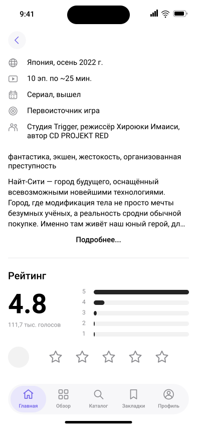
Тот же релиз после прокрутки к фактам и рейтингу.
Anixart/Features/Release/ReleaseDetailView.swift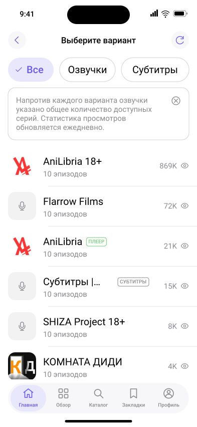
Озвучки из API для релиза 18846; фильтр Все. ПЛЕЕР у AniLibria иллюстрирует доступность прямого источника.
Anixart/Features/Episodes/EpisodePickerView.swift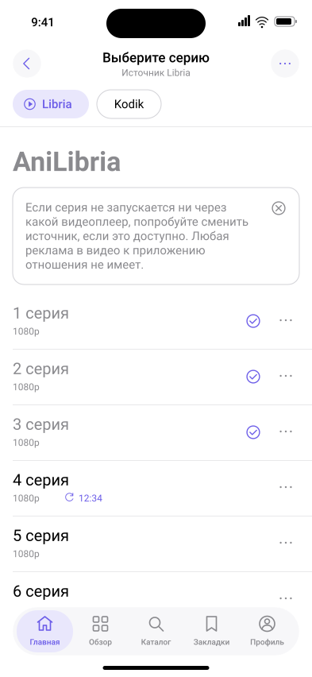
AniLibria / Libria. Просмотренные серии и позиция продолжения — пример состояния аккаунта.
Anixart/Features/Episodes/EpisodePickerView.swift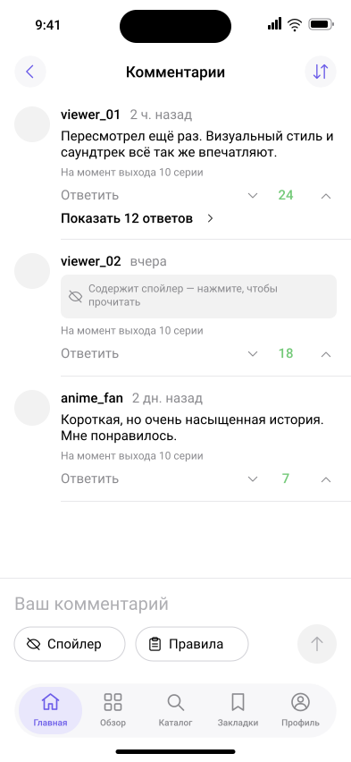
Вход выполнен; имена, комментарии, оценки и даты — демонстрационные.
Anixart/Features/Comments/CommentsView.swift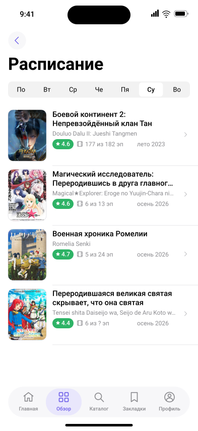
Выбрана суббота; публичное расписание API.
Anixart/Features/Schedule/ScheduleView.swift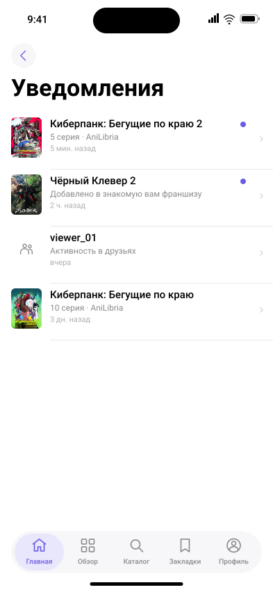
Демонстрационные события: новая серия, релиз франшизы и заявка в друзья.
Anixart/Features/Notifications/NotificationsView.swift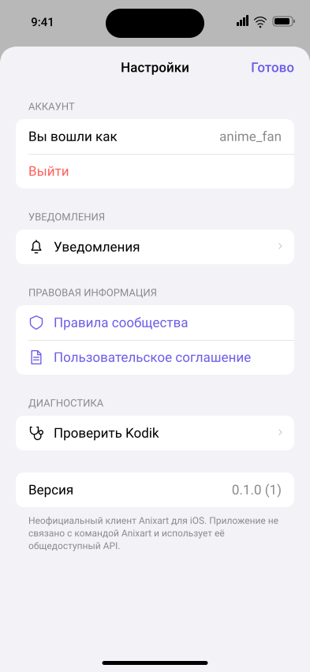
Большой модальный экран; вход выполнен. Версия взята из project.yml, а не установленной сборки.
Anixart/Features/Settings/SettingsView.swift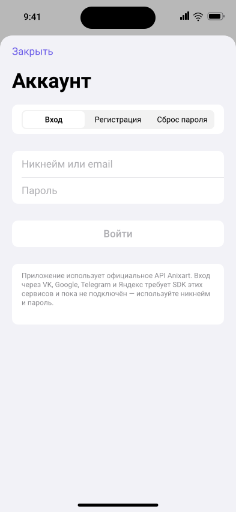
Большой модальный экран. Пустые поля, кнопка Войти неактивна.
Anixart/Features/Auth/AuthView.swift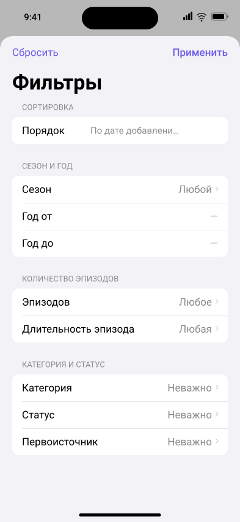
Большой модальный экран с системным Form. Показана первая видимая область; ниже есть остальные фильтры.
Anixart/Features/Catalog/FilterSheet.swift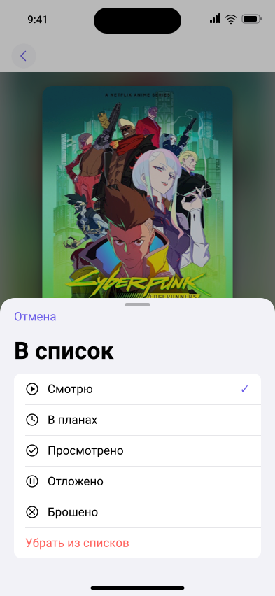
Модальное окно medium; текущий список Смотрю.
Anixart/Features/Release/ReleaseSheets.swift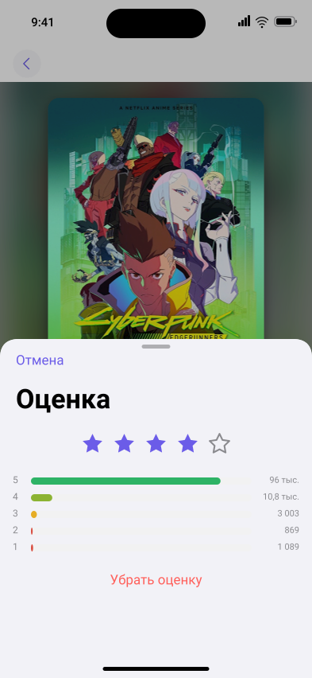
Модальное окно medium; пример выбранной оценки 4. Распределение голосов из API.
Anixart/Features/Release/ReleaseSheets.swift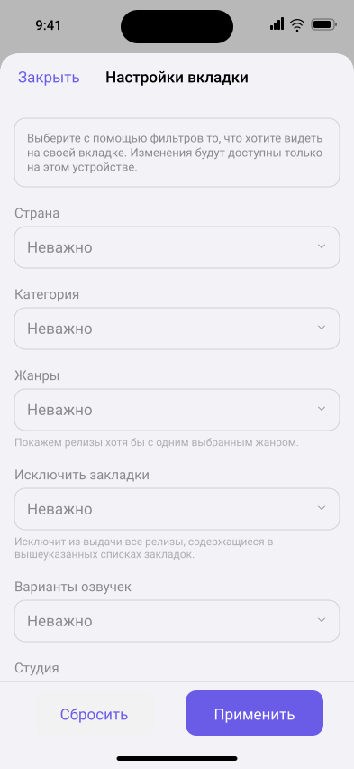
Начальное состояние Моя вкладка: закрытые поля, кнопки закреплены внизу.
Anixart/Features/Home/CustomTabSettingsView.swift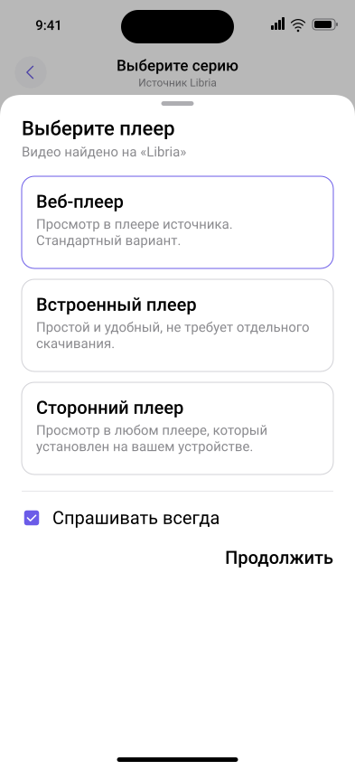
Окно на large detent, выбран Веб-плеер; прямой поток доступен на Libria. Веб-интерфейс стороннего источника не реконструируется.
Anixart/Features/Player/PlayerPickerSheet.swift